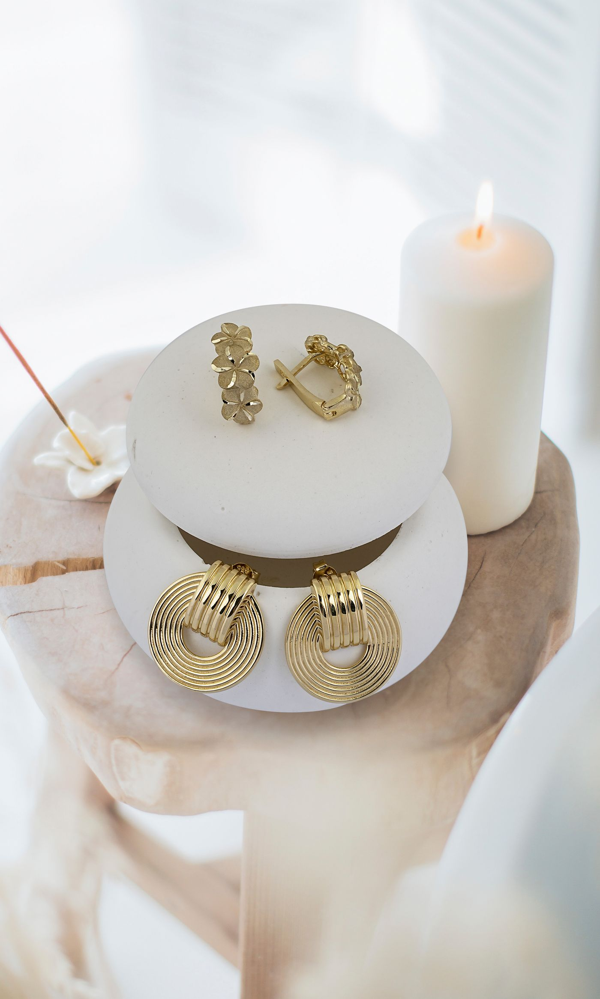
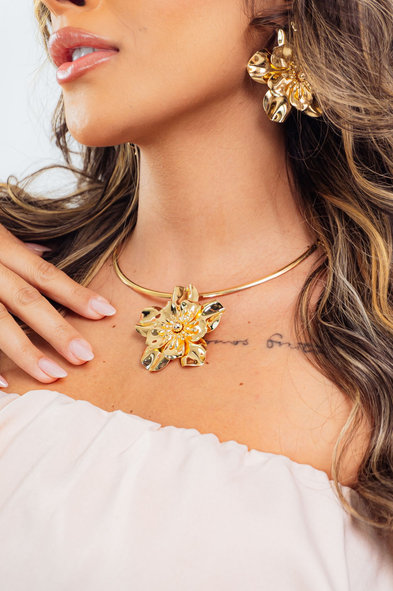

De oorbellen-edit.

Twee manieren om het licht te vangen: een kleine glans voor overdag, een uitgesproken vorm voor later. De oorbellen-edit begint bij het detail dat jij wilt laten spreken.

Van klein detail naar hele look.
Draag je haar uit je gezicht en geef je favoriete paar ruimte. Of combineer je oorbellen met een ketting die dezelfde sfeer heeft.